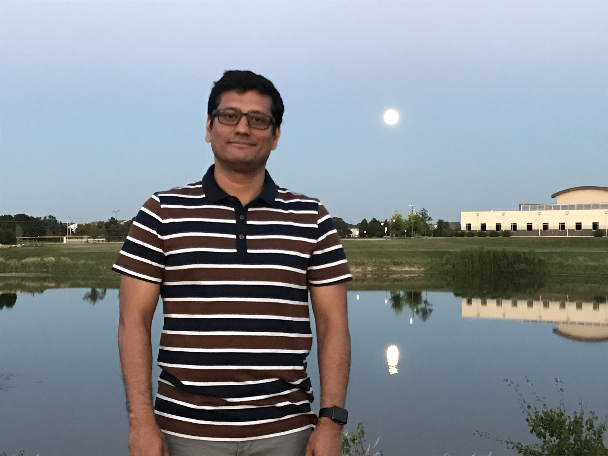

About Me

My Name is Mohammad Khan. I was born at Dhaka, Bangladesh. I finish my high school and 2 years of collage back in Bangladesh.
I moved to Boston MA 1995, that was my first time flew out of country. It was though decision for me, because I had to leave my mother and siblings back home. My cousin who picked me up from Boston Logan Airport.
It was a big culture shock for me. I had very hard time understanding American accent although I had two English subject starting from first grade to collage.
I didn’t know how to cook any kind of food, back in Bangladesh we had people they cook and clean for my family.
I started working full time when I was 18 Year's old and I was going school full time. When I was 20 year's old I went to
work for Boston Scientific Corp, I end up working for them 10 years. I moved to Chicago 2013 and I start working
for Allstate Insurance Corp. Currently I'm a Sr. Test Engineer at Allstate. I'm a huge sports fan, Specially New England Patriot’s and Boston Red Sox fan.
I enjoy reading books, specially non-fiction book. I'm very carefull about what I eat, I believe you are the product of what you eat. I try to work out every day and I make sure I’m going to gym at least five times a week.
Work out is big part of my life.
I'm a huge sports fan, Specially New England Patriot’s and Boston Red Sox fan.
I enjoy reading books, specially non-fiction book. I'm very carefull about what I eat, I believe you are the product of what you eat. I try to work out every day and I make sure I’m going to gym at least five times a week.
Work out is big part of my life.